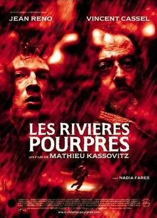

The genetics
The mystery rests on a eugenic breeding programme. The founders of Guernon's university, intellectuals rather than geneticists, set out to create a "super-race" defined by intellect by marrying within their own closed community. The film shows the classic consequence: generations of inbreeding produce serious genetic disorders, as an ophthalmologist explains to Niémans. Rather than abandon the project, the faculty and the hospital doctors replace their affected children with healthy babies taken from local families, keeping one of a pair of twins with her birth family as a control. The programme thus survives on stolen children and ends in murder. Its organisers act out of elitism and the belief that they are improving the species, and the film presents them as secretive and ruthless. The genetic premise is sound: related parents are more likely to carry the same harmful recessive variants, so their children more often inherit two copies and develop recessive disease.
How genetics is portrayed
- Overall portrayal of genetics
- negative The eugenic project is the hidden crime at the heart of the thriller: an elitist dream of a super-race that breeds disease and is sustained by baby theft and murder, which the film condemns outright.
- Outcome of the genetic intervention
- negative Inbreeding produces serious genetic disorders; the programme then survives by stealing children, kills Judith's father and leads directly to Judith's ritual revenge murders and her death in an avalanche.
- Guernon university faculty (founders, the Dean, Remy Callois)
- villain Aim: ideological (negative). Intellectual elitists who set out to breed a 'super-race' of intellect by inbreeding within the faculty, then, when this produced hereditary disorders, kept the programme going by arranging matches of stolen babies; the film treats them as the monstrous source of the horror, and the Dean's son tries to kill the detectives.
- University hospital doctors (incl. Philippe Sertys)
- villain Aim: ideological (negative). They secretly swapped the faculty's sick babies for healthy village infants, kept Judith as a 'control subject' and pursued the family that discovered it, causing a fatal crash; the story exposes them as ruthless criminals.
The story
In Guernon, an isolated university town in the French Alps, Superintendent Pierre Niémans investigates the brutal murder of a professor and librarian whose eyes have been removed. Elsewhere, Inspector Max Kerkerian looks into the desecration of the grave of Judith Hérault, a girl who died in 1982. The two cases converge. Niémans learns that the town's academic elite has spent generations trying to breed a race of superior intellect, and that inbreeding has left the faculty with serious hereditary disorders. To keep the programme going, doctors at the university hospital have been secretly swapping healthy babies from the village for the faculty's own. Judith was the identical twin of Fanny Ferreira, who was swapped as a baby; their mother faked Judith's death after the family was pursued. The detectives trace the murders to the twins and confront them on a mountain, where a gunfight triggers an avalanche.